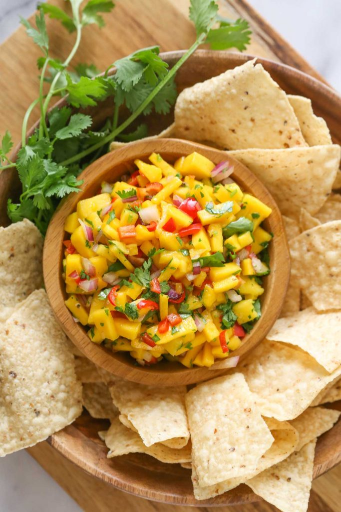

Mango Salsa

A Refreshing Dip
Mango Salsa is the refreshing dip that takes you to the tropics. This dip is a little out of the ordinary and
will spice up any meal.
Ingredient
- 2 fresh mangos (diced)
- 1/4 red onion (diced)
- 2 jalapeño peppers (minced)
- 1/2 sweet red pepper (minced)
- 1/2 cup fresh cilantro (chopped)
- Juice of one fresh lime
Instructions
- Combine the mango, red onion, jalapeño peppers, sweet red pepper, and cilantro. Squeeze lime juice over the salsa and toss to coat.
- Enjoy with chips, or as a taco topping.
- Makes six 1/4 cup servings. Keeps well refrigerated 1-3 days.
Back to home